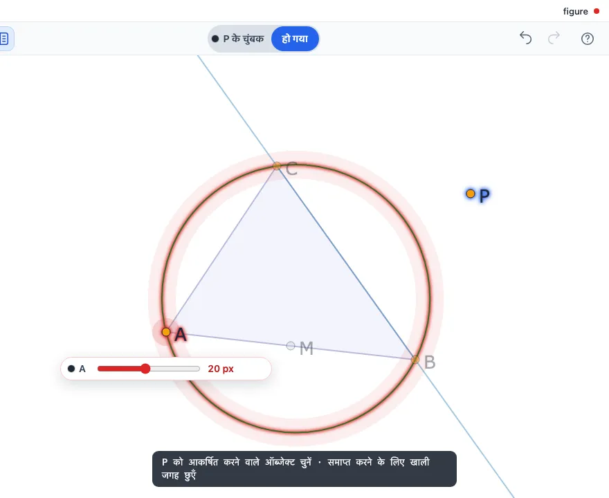

चुंबक, पिन और स्प्रिंग
चुंबक
चुंबकीय मुक्त बिन्दु, चुने गए ऑब्जेक्टों के पास खींचे जाने पर उनसे चिपक जाता है, बिना उनसे बँधे।

- मुक्त बिन्दु चुनें, फिर चुंबक। आकृति का बाकी भाग एक परदे के नीचे चला जाता है।
- हर आकर्षित करने वाले ऑब्जेक्ट (बिन्दु, रेखा, वृत्त, शांकव, वक्र, सूची) को छुएँ: वह लाल हो जाता है, आरंभिक आकर्षण 20 px। बिन्दु और उसके आश्रित शामिल नहीं किए जाते।
- चुने गए चुंबक का आकर्षण उसके कार्ड के स्लाइडर से तय करें: कोई नहीं (चुंबक हटाता है), 1 से 1000 px, हर जगह। हर चुंबक का आकर्षण-क्षेत्र हल्के लाल रंग में दिखाया जाता है।
- खाली जगह पर स्पर्श, हो गया या Esc से समाप्त करें।
सेटिंग के दौरान बिन्दु को आज़माने के लिए खींचा जा सकता है। हर सेटिंग पूर्ववत करने का एक चरण है।
पिन
स्क्रीन पर पिन करें (मुक्त बिन्दु, समतल आकृति): दृश्य को ज़ूम करने या खिसकाने पर बिन्दु विंडो में अपनी जगह बनाए रखता है, न कि अपने निर्देशांक। वह फिर भी खिसकाया जा सकता है। दूसरी बार दबाना: पिन हटाना।
स्प्रिंग
एनिमेट करें (रेखा, रेखाखण्ड, किरण, वृत्त, चाप, बहुभुज, शांकव या बिन्दुपथ पर बिन्दु) बिन्दु के नीचे एक स्प्रिंग निकालता है जिसके सिरे पर एक गेंद होती है।
- गेंद को खींचकर छोड़ने से बिन्दु चल पड़ता है; खींचते समय बिन्दु की एक परछाईं पहले से गति दिखाती है।
- लंबाई: गति, दिखाए गए स्तरों में (रेखा, बहुभुज या शांकव पर px/s; वृत्त पर °/s; बिन्दुपथ पर %)।
- पक्ष: दिशा; बिन्दु खिंचाव की उल्टी दिशा में चलता है।
- रेखा के आड़े (45° से अधिक): आगे-पीछे। अन्यथा बिन्दु चक्कर लगाता है।
- पहले स्तर से नीचे: रुकना।
पहले से चल रहे बिन्दु पर स्प्रिंग वर्तमान गति पर तना हुआ निकलता है। को दूसरी बार दबाने से स्प्रिंग समेट लिया जाता है। सटीक गति, उल्टी दिशा, छोर पर रुकना: गुणों का एनीमेशन भाग, जो स्लाइडरों को भी एनिमेट करता है।